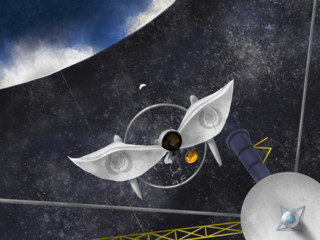
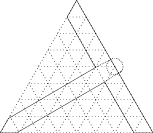
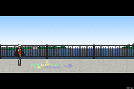

bydriv.github.io/worldview
https://bydriv.github.io/worldview/
created at
updated at
Characters
水無川定理
Figure 1: 2075年ころのテーリ．
Figure 2: © 2018 @kitunenobotan. See License.
ミナガワ・テーリ (水無川定理; MINAGAWA, Teiri; Theo)は， 21世紀の計算機科学者である．2056年2月29日， アメリカ合衆国カリフォルニア州 リバーサイド生まれの女性．身長は4′8′′．母は ミナガワ・マリ， 父はノア・トルーマン． 母方の祖母はミナガワ・コーリ， 母方の祖父はフユノ・ナツバナ． レミリー・"レマ"・リバーズは彼女のクローンであり， 法的に考えると厳密には違うのだが年齢的には彼女の娘である． 孫娘はケイ・リバーズ， ひ孫娘はレマ・リバーズ． 母が日本人，父がアメリカ人のハーフである． そのうえ生まれて間もなく Calexit と呼ばれるカリフォルニア独立運動が盛んになって カリフォルニア共和国が成立してしまい， 彼女は日本， 合衆国， 共和国の三重国籍となってしまった． 合衆国と共和国は多重国籍を認めていたし， 彼女は日本にあまり行ったことがなかったので， 最終的に日本国籍のみを捨てる選択をした． マサチューセッツ工科大学を卒業， スタンフォード大学を修了後 Intelligence Support Activity (ISA)に入局し， 世界各国のコンピュータ・システムの脆弱性の発見と蒐集，およびエクスプロイトの開発， あるいはそれを利用した作戦に従事した． 父の実家がボストンにあり，学部時代は父の実家で暮らしていた． 専門は暗号論で，趣味は定理証明支援系による暗号アルゴリズムの安全性の証明． エミリーとは学部時代からの親友． テーリ(定理)は英語で Theorem を意味するため， 彼女を テオ (Theo) と呼ぶ友人もいる．
肌の色: (#FFE0C0). 髪の色: (#403030). 瞳の色: (#808080). 服の色: (#A04040).
エミリーからの呼び名: テーリ (Teiri). その他の呼び名: ミナガワ博士 (Dr. MINAGAWA). (諜報員としての偽名) ハセガワ・マリ (長谷川真理; HASEGAWA, Mari).
人柄
Figure 3: 着物がすきなようで，彼女は合衆国に住んでいるが，毎年元旦やお盆には着物を着るらしい．
Figure 4: バニーを着るテーリ．恥ずかしそうにしているが，まんざらでもないようである．
彼女はギフテッドだという自覚はあったが，けっして他人よりすぐれているとは思っていなかった 1．
どうやらかわいい服を着るのがすきなようでバニーや着物などいろいろ着る．
Emily "Emma" Rivers
Figure 5: 2085年ころのエマ．10年前に友人たちとした約束を果たした．
エミリー・"エマ"・リバーズ (Emily "Emma" Rivers)は， 21世紀の物理学者である．2046年7月4日，アメリカ合衆国マサチューセッツ州 ボストン生まれの女性．身長は5′10′′． レミリー・"レマ"・リバーズの養母． レミリーは 2076年2月29日， テーリが ISA の任務中， ドイツで違法におこなわれていたヒトクローンの研究に巻きこまれ生まれたが， テーリは当時 20歳になったばかりであり子どもを育てるほど成長していなかったし， エミリーは子ども好きなのに不妊症で養子をほしがっていたので， 彼女をひきとった． マサチューセッツ工科大学を修了後NASAに入局し， 月の裏側国際天文台に 主任研究員として勤めた．そのあと 国家偵察局 (National Reconnaissance Office; NRO) にスカウトされ， 主任研究員と諜報員の両方の仕事をこなしていた． 幼少期から夢は異星人を見つけることだったが， きちんと物理を学んでからは非現実的だと感じつつも諦めきれず， 知的であろうとなかろうと地球外生命体を見つけることを目指すようになった． 重度のトレッキーでことあるごとにスタートレックのセリフを聖書のように引用する． 好きな言葉は "I have been, and always shall be, your friend"． テーリとは学部時代からの親友であり， エミリーは1度も浪人や留年を経験したことがないことを誇りに思っていたが， それどころか10歳も年下のテーリの才能におそれおののいていた．
肌の色: (#FFF8F0). 髪の色: (#C04040). 瞳の色: (#00A000).
テーリからの呼び名: エミリー (Emily). ヴェリティからの呼び名: エマ (Emma). ディーサからの呼び名: エマ (Emma). その他の呼び名: リバーズ博士 (Dr. Rivers); (部下からは) 主任 (Chief); (親しい部下からは，彼女がスタートレックを好きなことにちなんで) 船長 (Captain).
学部生時代，彼女は自己紹介するとき エミリー・リバーズ (Emily Rivers)と名乗っていたが， 院生になってからは エマ・リバーズ (Emma Rivers)と名乗っていた． そのためテーリなど学部生時代からの知りあいは彼女のことをエミリーと呼ぶが， 院生時代からの知りあいは彼女のことをエマと呼ぶことが多い． NASA に入局してからはふたたびエミリー・リバーズと名乗るようになったようだが， 名前で呼ばれることは少なくなり リバーズさん (Ms. Rivers)や ミス・リバーズ (Miss Rivers), あるいは リバーズ博士 (Dr. Rivers) と呼ばれるようになった．
人柄
エマの夢は異星人を発見することだった 6．しかし， 一方で異星人が存在することを支持しつつ，発見することはきわめて難しいと考える現実主義者でもあった 7． そのためか，彼女が高校生になるころにその夢は知的でなくとも地球外生命体を発見することまで小さくなっていた 8． 彼女はSETIを支持していた 9． 一方で当時のSETIに限界を感じていて，それは当時の方法では過去の文明しか見つけることができないということで 10， それは彼女がタキオン通信を研究する動機になった 11．
彼女の専門は物理学であり，数学徒に対して強いライバル心を抱いていた 12． そのため数学を専門とする友人のヴェリティを，彼女はライバルだと認識していた 13．
彼女はギャンブルがプレイすることもプレイするひとも苦手だった 14． 彼女はいじめが嫌いで，そういった行為を許せない性格だった 15．
彼女は自分自身が矮小な存在にすぎないのだと感じていて 16， テーリのようなギフテッドは遠い存在だと感じ 17， 彼女に対して劣等感を感じていた 18．
お酒はすきなようでよく飲む 19． また嫌なことがあるとやけ酒を飲むタイプらしい 20．
古風な木造のバーをおしゃれと感じるようだ 21．
能力
学部生時代
NASA局員時代
彼女は2072年，26歳のときにNASAに入局し，月の裏側国際天文台に配属された 36． ただし地球で仕事をすることもあり， その際にはバージニア州ハンプトンのラングレー研究所で勤務していた 37． 同年，彼女はコーリと出逢った 38． またコーリと出逢ったことがきっかけで，5年ぶりにテーリに連絡をした 39．
2073年1月には地球でテーリ，ヴェリティ，そしてディーサと過ごしていた 40． 同年1月1日にはマッカラン空港でヴェリティと待ちあわせ 41， ふたりはツインの部屋に泊まった 42． 1月2日にはヴェリティとカジノで，どちらがより多く稼げるかの勝負をした 43． 1月7日から1月8日にはアイスランドでディーサと過ごし， 1月14日から1月16日まではカリフォルニアでテーリと過ごす予定だった 44 が， 1月13日にレマに邪魔されて飛行機に乗ることを諦めた 45 ので， テーリとの予定にはずいぶん遅れた．
Verity Arith Valley
ヴェリティ・アリス・バレー (Verity Arith Valley)は，21世紀の数学者である．
人柄
能力
資産
世界各国に別荘をもつほどの資産があった 57．
Dísa Jónudóttir
ディーサ・ヨーヌドフテル (Dísa Jónudóttir)は， 21世紀の工学者である．
人柄
能力
評価
エミリーから，その能力はテーリと甲乙つけがたいと評価されていた 66．
冬野夏花
フユノ・ナツバナ (冬野夏花)は， 21世紀の料理人． 2001年生まれ．コーリが早生まれのため， 彼女とは2学年違っていた． 妻は ミナガワ・コーリ (水無川考理)， 娘は ミナガワ・マリ (水無川真理)． 妹に フユノ・ハルカ (冬野春香) がいる． 両親が共働きだったため，もともと家事をよくこなしていた． そのため料理が得意で，料理人となった． コーリとは幼馴染で高校まで同じ学校だったが， 彼女が九州大学に進学したことで離れ離れになってしまう． そのうえ彼女はさらに東京大学へ進んでしまったため， そのあいだほとんど連絡をとることがなかった． ふたりは両想いだったが，お互い想いを打ちあけないまま月日が経ち， ある日コーリが帰省したことがきっかけで昔話が弾み， その流れで両想いだったということが発覚して， そのまま付きあってすぐに結婚した．
コーリからの呼び名: なつばなくん
水無川真理
ミナガワ・マリ (水無川真理)は，21世紀の研究者である． 2028年2月29日，東京都生まれ． 愛称は トゥルーシー (Truthy)． 夫は ノア・トルーマン (Noah Truman)， 母は ミナガワ・コーリ (水無川考理)， 娘は ミナガワ・テーリ (水無川定理; MINAGAWA, Teiri)． 2040年ころまでに渡米し 67， それから2040年ころ帰国したとき，母が失踪したことに気づいた 68 69とのことで， おそらく小学生のとき合衆国へ留学し， 中学生か高校生のころ母を失ったのではないかと考えられる． 2060年代には合衆国の大学教員になっていて 70， テーリをもともとギフテッドのように育てるつもりなほど教育熱心だったようだ 71．
Lemily "Lemma" Rivers
レミリー・"レマ"・リバーズ (Lemma Rivers)は，ミナガワ・テーリのクローンである． 2076年2月29日生まれ．
Kay Rivers
ケイ・リバーズ (Kay Rivers)は， レミリー・"レマ"・リバーズの娘， レマ・リバーズの母．
Grace Autumn Waters
グレース・オータム・ウォーターズ (Grace Autumn Waters)は， オクラホマ州出身の数学者で，合衆国第59代大統領である． 2037年6月3日生まれ． 2073年1月20日就任． 黒人とインディアンのハーフ．
???

Figure 6: Voyager のゴールデンレコードを調査する鳥人．背景に見える惑星には海や雲が存在するように見えるが，かれらの母星だろうか．
人類ではない，謎の鳥人． Voyager のゴールデンレコードを調査した．
Technology
Holo I/O
Figure 7: ホロイオを使う女性．
ホロイオ (Holo I/O) は， 21世紀中ごろに開発されたウェアラブルデバイスである． リストバンド型の形状をしており，手首に巻いて使う． 手の動きを追跡して 入力 (input) デバイスとして使え， また単色ではあるがホログラムを表示して 出力 (output) デバイスとしても使える． 色は複数選べたが，同時に出力できるのは 1色のみだった． 汎用的な入出力デバイスであり， さまざまな機器に対応していた．
Culture
Lambda Church
Figure 8: ラムダ教会のシンボルを身につける女性．

Figure 9: ラムダ教会のシンボルは定規とコンパスで簡単に作図できる．
ラムダ教会 (Lambda Church)とは， 21世紀に計算機科学者のあいだで自然発祥した冗談宗教である． もともとはある無神論者の計算機科学者が宗教をたずねられたとき， ラムダ計算の創案者 Church にちなみ，冗談めかしてラムダ教会と答えたことが始まりとされる． 21世紀末にはいくつかの国で宗教法人として認められた． ラムダ教会の信者をラムダ教徒といい， ラムダ教会のシンボルを身体のどこか見える場所に身につけることでそれを示すことが一般的である． 組織的な活動などはとくにおこなわれないが，世界中で信者が思うままに活動しており， 規模はそこそこ大きいものと推定されている．
Countries
United States of America
アメリカ合衆国 (United States of America)は， 北アメリカ大陸に位置する連邦共和国である．
大統領
2073年1月20日にはグレース・A・ウォーターズが大統領に就任した 72．
12人のムーンウォーカー
アメリカ合衆国からはすくなくとも12人の月を歩いた人類が生まれた． かれらはムーンウォーカーと呼ばれた．
日本
日本 (Japan)は，日本列島にある島国である．
ムーンウォーカー
日本から初めてでたムーンウォーカーはミナガワ・コーリであった． とはいえ，21世紀にはすでに月を歩くという目的で月開発をする組織は少なくなっており， 彼女が月へ向かったのは停止したシステムを復元するためだった．
California Republic
カリフォルニア共和国 (California Republic) とは， 21世紀中ごろに成立した共和国である．
その歴史は古く， 1846年， 米墨戦争にまでさかのぼる． 戦後には合衆国に吸収されカリフォルニア州となり共和国は消滅してしまった． ところが1848年ころに砂金が見つかるとゴールドラッシュが始まり， 20世紀末にはシリコンバレーと呼ばれる大企業の本拠地がつらなる情報産業の中心地となるなど， またたく間に大国とならぶ経済圏を構成するにいたった．
共和国はすくなくとも 2073年には独立国家を自称していた 74 が， 合衆国はそれを認めていなかった 75． ところがロシアや中国はすでに共和国を国家として承認しており， カリフォルニア独立問題が発生していた 76． 2073年に就任したウォーターズ大統領はカリフォルニアの独立を認める方向性で考えていたらしい 77．
Cities
Boston
Harvard Bridge

Figure 11: MITのハッカーたちはハーバード橋に "Halfway to Hell" と書いた．矢印の指し示す方向にMITがある．
ハーバード橋とは，アメリカ合衆国マサチューセッツ州にある橋である． 1958年10月， MIT のハッカーたちは オリバー・スムート (Oliver R. Smoot) の身長を 1スムートと定義する スムート (smoot) という単位系を発明し， この橋の長さを測った． それによれば， この橋の長さは 364.4 スムート足すことの耳ひとつ分であった． また橋の中央には "Halfway to Hell" と書き，矢印で MIT を指し示した．
Luz Bethel
ルズベテル (Luz Bethel) とは，サンディエゴの南方，北緯0度2分20秒西経117度5分50秒， 赤道直下の公海上に位置するメガフロートである 78． その中心には合衆国宇宙エレベータニュートンズ・クレードルがそびえたっていた 79． ルズベテルという名前はクレードルをヤコブのはしごにたとえ， さらに旧約聖書でヤコブの梯子が降りた町ルズと， ヤコブがその梯子を見てその町をベテルと名づけたこと(創世記28:19)にちなむものだった 80． 中国語では 扶桑国 とも呼ばれていた． 81． 扶桑 とは，はるか東方に存在するといわれた伝説の大樹で， それを宇宙エレベータにたとえたものだった．
Moon
First Flag
1番旗 (First Flag, いちばんばた)は，静かの海の溶岩洞の地下空洞に建設された都市である．
Fifth Flag
5番旗 (Fifth Flag, ごばんばた)は，デカルト高地に位置する都市である．
International Observatory in the far side of the Moon
Figure 12: 2085年ころ，月の裏側天文台と地球をつなぐ基地局からの眺め．2085年はまだ観光目的で月へ行くことは一般的ではなく，科学者たちが研究のためにおもむくのみであった．そして月の裏側天文台からは地球が見えないため，科学者たちは地球を見るためにわざわざ基地局へ行くことがよくあった．
月の裏側国際天文台 (International Observatory in the far side of the Moon; IOM)は， その名が示すように月の裏側に建造された天文台である． 21世紀後半にJAXAの主導で建設され，現在では国際的に利用されている．
月の裏側天文台は月の裏側にあるため，地球と直接通信することができない． そのため月の表面には地球と通信するための基地局がいくつか配備されている． 21世紀後半，まだ月は研究開発の地であり，観光施設がなかった． 月の裏側からは地球が見えないため，基地局は地球を眺めるための施設として科学者のあいだで人気が高かった．
20世紀の合衆国とソ連による宇宙開発競争以来，宇宙開発は下火になっていた． 21世紀の話題の筆頭は人工知能となり，とくに月や火星の開発なんてものには， もはや予算が下りない状況となっていたのだ． ところが JAXA の かぐや (セレーネ; SELENE) の成功によって日本では月探査の有用性が見なおされ， 21世紀中ごろに月面基地の開発の計画が現実味を帯びることとなった． 一方そのころアメリカ合衆国やロシア連邦，中華人民共和国は軌道エレベータのほうに関心が向いており， 月面基地の開発は日本がもっとも積極的におこなうこととなった． その成果である月面基地は 月の都 (City of the Moon) と名づけられ， そのあと国際的に利用されるようになり， こんにちの月の裏側国際天文台の基礎となった．
月の裏側国際天文台のクルーには，ひとりひとり個室が与えられていた 82． クルーの4半期のスケジュールは，おおむね月の裏側国際天文台での勤務が2ヵ月， リハビリも兼ねて地球での勤務が3週間だった 83．
Worlds
Elder Universe
古宇宙 (Elder Universe) とは，われわれ現代人が住む，まさにこの宇宙のことである．
Old Universe
Figure 13: この鳥人は旧宇宙で，ガンマ線バーストが発生するまえに Voyager のゴールデンレコードを調査した．
Figure 14: 旧宇宙のテーリ． 線画は © 2018 @kitunenobotan. See License.
旧宇宙 (Old Universe) は， 古宇宙のつぎの世代にあたる， 古宇宙とは別に存在する宇宙である． 古宇宙と非常によく似た歴史を歩んでおり，同姓同名の人物も多数存在するが， 古宇宙よりはるかに進んだ科学技術をもっていた． ところが2度に渡るガンマ線バーストの発生により， 一時は滅亡寸前まで文明が縮退してしまった． 生きのこった人々も一部の遺伝子情報が完全に破壊されてしまい， ほとんどすべての生物がアルビノになってしまった．
ガンマ線バーストは，旧宇宙の歴史のうち， すくなくともふたつの時点で起こった． 1度めは人類の時代の，すくなくとも21世紀より以前であり， 2度めは鳥人の時代で Voyager のゴールデンレコードが発見された直後であった．
よく誤解されるが，平行宇宙とは異なる． もともと旧宇宙は， 宇宙規模の災害で古宇宙の全生命が滅んでしまったため宇宙の管理を司る ミィ が宇宙を再編して誕生した． しかしすくなくとも 21世紀以前にガンマ線バーストにより地球は危機的な被害をうけ， 生きのこった人々も含めほとんどの生物がアルビノになってしまった． それでも文明は存続し， なんとか失われた遺伝子もとりもどしてふたたびアルビノでない生物が増えていたが， ある鳥人が Voyager のゴールデンレコードを調査した直後にふたたびガンマ線バーストが起こり， またほとんどの生物がアルビノになってしまった． 結局，旧宇宙も宇宙規模の災害で全生命が滅んでしまい， またミィが再編して新宇宙が生まれる． つまり時系列的には，
| 古宇宙 | → | → | 宇宙規模の災害 | → | ミィによる宇宙の再編 | → | |
| 旧宇宙 | → | ガンマ線バースト | → | 宇宙規模の災害 | → | ミィによる宇宙の再編 | → |
| 新宇宙 | → | → | → |
という歴史を歩んだ単一の宇宙であるということになる．
New Universe
新宇宙 (New Universe) とは，旧宇宙のつぎの世代の宇宙である． 古宇宙と旧宇宙の生命の滅亡の原因が科学の発達によるものだったので， ミィが地球から燃料など科学の発達に必要不可欠な資源をとりのぞいて再編した宇宙だった． 新宇宙ではあまり科学が発達せず，人々は地球からでることもなく， 中世的で幸せな暮らしを続けた．
The Cradle
大文明 (The Cradle) は，鳥人から見た人類のことである． 鳥人たちの文明は人類が滅びてより遠い未来に誕生したが， かれらは地質学や考古学の見地から遠い昔， すくなくとも太陽系を制覇するほど栄えていた文明が存在したことを突きとめた． そのためその文明， すなわち人類のことを大文明と呼んだのである．
Chronology
Elder Universe
20世紀
| 年 | 月 | 日 | 曜日 | できごと |
|---|---|---|---|---|
| 2000 | 2 | 29 | 火 | ミナガワ・コーリが生まれる |
21世紀
| 年 | 月 | 日 | 曜日 | できごと |
|---|---|---|---|---|
| 2020頃 | コーリがシャオシューに院に進み遺伝医学を修めるようたきつける84 | |||
| 2028 | 2 | 29 | 火 | ミナガワ・マリが生まれる |
| 2040頃 | コーリが忽然と姿を消し，周囲から死亡したものと思われる85, 86 | |||
| 2046 | 7 | 4 | 水 | エミリー・リバーズが生まれる |
| 2056 | 2 | 29 | 火 | ミナガワ・テーリが生まれる |
| 2065頃 | MITでエミリーとテーリが出逢う87 | |||
| 2070頃 | ケンブリッジ大学のキングス・カレッジでエミリーとヴェリティが出逢う88 | |||
| 2070頃 | ある学会でエミリーとディーサが出逢う89 | |||
| 2072 | 9-10頃 | エミリーがNASAに入局し，月の裏側国際天文台に配属される90, 91 | ||
| 2072 | 9-10頃 | エミリーとコーリが出逢う92 | ||
| 2073 | 1 | 1 | 日 | エミリーがヴェリティとマッカラン空港で待ちあわせる93 |
| 2073 | 1 | 2 | 月 | エミリーがヴェリティとラスベガスで勝負をする94 |
| 2073 | 1 | 2-7頃 | 月-土頃 | ウォーターズ次期大統領の当選が正式に決定する95, 96 |
| 2073 | 1 | 7 | 土 | ディーサがケプラヴィーク空港まで車でエミリーを迎えに行く97 |
| 2073 | 1 | 7-8 | 土-日 | エミリーとディーサがレイキャヴィークでエミリーと過ごす98 |
| 2073 | 1 | 13 | 金 | エミリーがノーフォーク国際空港で飛行機に乗るのを，レマが邪魔する99 |
| 2073 | 1 | 13 | 金 | エミリーが乗るつもりだった事件でハイジャック未遂事件が起こる100 |
| 2073 | 1 | 14 | 土 | エミリーがロサンゼルス空港でテーリと待ちあわせる101 |
| 2073 | 1 | 20 | 金 | グレース・A・ウォーターズが合衆国第59代大統領に就任する102 |
| 2076 | 2 | 29 | 土 | レミリー・"レマ"・リバーズが生まれる |
| 2085頃 | エミリーが月の裏側国際天文台の基地局で旧友との約束を果たす |
22世紀
| 年 | 月 | 日 | 曜日 | できごと |
|---|---|---|---|---|
| 2124 | 2 | 29 | レマ・リバーズが生まれる |
???
| 年 | 月 | 日 | 曜日 | できごと |
| ? | 宇宙規模の災害で全生命が絶滅する | |||
| ? | ミィによって宇宙が再編され，旧宇宙が誕生する |
Old Universe
???
| 年 | 月 | 日 | 曜日 | できごと |
|---|---|---|---|---|
| ? | ミィによって宇宙が再編され，旧宇宙が誕生する | |||
| ? | 謎の鳥人が Voyager のゴールデンレコードを調査する | |||
| ? | 宇宙規模の災害で全生命が絶滅する | |||
| ? | ミィによって宇宙が再編され，新宇宙が誕生する |
New Universe
???
| 年 | 月 | 日 | 曜日 | できごと |
|---|---|---|---|---|
| ? | ミィによって宇宙が再編され，新宇宙が誕生する |
Translations
敬称
N は名詞を表すメタ変数です．
| English | 日本語 | 補足事項 |
|---|---|---|
| Prof. N | N 教授 | |
| Dr. N | N 博士 / ドクタ・ N | 医師の場合はドクタと訳します． |
| Ms. N | N さん | 性別は名前からわかりますので，通常は "さん" と訳します． |
| Miss N | ミス・ N | Miss を "さん" と訳すと未婚という情報が失われてしまいます． |
| N -san | N ＝サン | "-san" の音写と考えて "＝サン" と訳します． "さん" は通常 "Ms." や "Mr." と訳します． |
人名
人名は音写が基本です． 人名に限りませんが， 単語を訳すときは "登場人物から見て単なる音でしかないか，意味のある言葉か" で音写かどうかを判断します． 人名は通常単なる音でしかないので， 日本人の名前だろうとカタカナが基本です． たとえば， "真理" という女性名はわたしたち日本人にとって， 通常 "まことのことわり" という意味ではなくて， 単に "マリ" という音の名前です． ゆえにマリと音写するわけです． "Verity" と "Arith" はそれぞれ英語で "真実を述べる" と "算術" という意味ですが， やはり英語圏の人々も， 人名と考える場合には 単にそういう音の名前と解釈するでしょうから， "ヴェリティ" や "アリス" と音写するわけです．
ただし，見出しなどでは原語で記述する場合もあります． いずれにせよ原語で記述するなら原語で， 訳語で記述するなら訳語で一貫して記述します． たとえば，一方で日本人の名前を "考理" と漢字で書いておきながら他方で "エミリー" とカタカナで書くのはおかしく， この場合は "コーリ" とカタカナで書くか さもなくば "Emily" とラテン文字で書くということです．
人名がスペースで区切られている場合， "・" で区切るように訳します． 人名がハイフンで繋がれている場合， "＝" で繋ぎます．
英語は表音文字ですので原語と音写が一致する場合があります ("Emily" は原語でも音写でも "Emily" です) が， English の項に書かれているのはすべて音写された名前です．
| 原語 | English | 日本語 | 補足事項 |
| Teiri/定理 | Teiri | テーリ | テイリではなくテーリです．ややこしいのですが，彼女は合衆国で生まれたので Teiri も定理も原語扱いです． |
| 考理 | Kouri | コーリ | コウリではなくコーリです． |
| 真理 | Mari | マリ | |
| 水無川 | MINAGAWA | ミナガワ | |
| Emily | Emily | エミリー | |
| Emma | Emma | エマ | |
| Rivers | Rivers | リバーズ | |
| Verity | Verity | ヴェリティ | |
| Valley | Valley | バレー | V は基本的にヴで音写したいのですが， Valley の音写としてはバレーのほうが一般的ですので，こうなっています． |
| Arith | Arith | アリス | アリズではありません．日本語表記だとわかりにくいのですが発音は Alice ではありません． |
| Dísa | ディーサ | 英語表記は未定です． | |
| Jónudóttir | ヨーヌドフテル | 基本的に原語の発音を音写します． | |
| Lemma | Lemma | レマ | |
| Grace | Grace | グレース | |
| Autumn | Autumn | オータム | |
| Waters | Waters | ウォーターズ |
Contributing
- GitHub で fork してください．
- おすきなように編集してください．
- Pull Request をしてください (ただし merge されるかどうかは気分次第です)．
このページは同一の世界観でいろいろ作品をつくって， それをまとめよう！ 的な感じのページです． すでに書かれているように， 作中に登場したキャラや舞台の設定などを出典を示して記載したりします． もちろん文章や絵などの二次創作も歓迎です．
License
- 点線でかこまれた部分以外は GPLv3 です．
- 点線でかこまれた部分の著作権はそれぞれの著作者に帰属します． GPL などのライセンスは設定されておらず， 著作者がすべての権利を有していますので，ご注意ください．